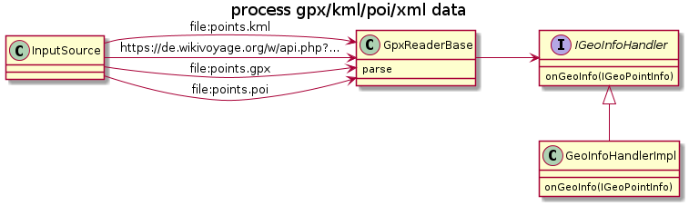

public class GpxReaderBase
extends org.xml.sax.helpers.DefaultHandler
A parser for xml-geo formats.

GpxReaderBase parser = new GpxReaderBase(new IGeoInfoHandler() {
public boolean onGeoInfo(IGeoPointInfo geo) {
System.out.print(String.format("got lat=%f lon=%f\n", geo.getLatitude(),geo.getLongitude()));
return true;
}
});
parser.parse(new InputSource(new FileReader( "test.gpx")));
Supported formats:
This parser is not acurate: it might pick elements from wrong namespaces.
Note: if you change/add features to this xml parser please also update regression test-data and prog at
Created by k3b on 20.01.2015.
| Modifier and Type | Field and Description |
|---|---|
protected GeoPointDto |
currentGeoPoint
If not null geo-parsing parsing is active
|
protected GeoPointDto |
mReuse
If not null this instance is cleared and then reused for every new gpx found
|
protected IGeoInfoHandler |
onGotNewWaypoint
Callback to process every point received
|
| Constructor and Description |
|---|
GpxReaderBase(IGeoInfoHandler onGotNewWaypoint)
Creates a new parser.
|
GpxReaderBase(IGeoInfoHandler onGotNewWaypoint,
GeoPointDto reuse)
Creates a new parser.
|
| Modifier and Type | Method and Description |
|---|---|
void |
characters(char[] chars,
int start,
int length)
Java sax api implementation: Collect value while between start-element and end-element
|
protected GeoUri |
createGeoUriParser(int modes) |
void |
endElement(java.lang.String uri,
java.lang.String localName,
java.lang.String qName)
Java sax api implementation: Element value and attribut inspection/processig
|
protected java.lang.Double |
getLatOrLong(java.lang.String strLatOrLong) |
protected GeoPointDto |
newInstance()
Factory method: Returns an instance of an empty
GeoPointDto |
protected GeoPointDto |
newInstance(org.xml.sax.Attributes attributes)
Returns an instance of
GeoPointDto and tries to data from the xml-attributes |
void |
parse(org.xml.sax.InputSource in)
Processes gpx/kml/poi/xml data and calls [@link IGeoInfoHandler#onGeoInfo} for every
IGeoPointInfo found. |
void |
startElement(java.lang.String uri,
java.lang.String localName,
java.lang.String qName,
org.xml.sax.Attributes attributes)
Java sax api implementation: Element name inspection/processig
|
protected IGeoInfoHandler onGotNewWaypoint
Callback to process every point received
protected final GeoPointDto mReuse
If not null this instance is cleared and then reused for every new gpx found
protected GeoPointDto currentGeoPoint
If not null geo-parsing parsing is active
public GpxReaderBase(IGeoInfoHandler onGotNewWaypoint)
Creates a new parser.
onGotNewWaypoint - callback to process every point receivedpublic GpxReaderBase(IGeoInfoHandler onGotNewWaypoint, GeoPointDto reuse)
Creates a new parser.
onGotNewWaypoint - callback to process every point receivedreuse - if not null this instance is cleared and then reused for every new gpx found. This way the reader can load different implementations of IGeoPointInfopublic void parse(org.xml.sax.InputSource in)
throws java.io.IOException
Processes gpx/kml/poi/xml data and calls [@link IGeoInfoHandler#onGeoInfo} for every IGeoPointInfo found.
java.io.IOExceptionprotected GeoPointDto newInstance()
Factory method: Returns an instance of an empty GeoPointDto
protected GeoPointDto newInstance(org.xml.sax.Attributes attributes)
Returns an instance of GeoPointDto and tries to data from the xml-attributes
protected GeoUri createGeoUriParser(int modes)
public void startElement(java.lang.String uri,
java.lang.String localName,
java.lang.String qName,
org.xml.sax.Attributes attributes)
throws org.xml.sax.SAXException
Java sax api implementation: Element name inspection/processig
startElement in interface org.xml.sax.ContentHandlerstartElement in class org.xml.sax.helpers.DefaultHandlerorg.xml.sax.SAXExceptionpublic void endElement(java.lang.String uri,
java.lang.String localName,
java.lang.String qName)
throws org.xml.sax.SAXException
Java sax api implementation: Element value and attribut inspection/processig
endElement in interface org.xml.sax.ContentHandlerendElement in class org.xml.sax.helpers.DefaultHandlerorg.xml.sax.SAXExceptionprotected java.lang.Double getLatOrLong(java.lang.String strLatOrLong)
public void characters(char[] chars,
int start,
int length)
throws org.xml.sax.SAXException
Java sax api implementation: Collect value while between start-element and end-element
characters in interface org.xml.sax.ContentHandlercharacters in class org.xml.sax.helpers.DefaultHandlerorg.xml.sax.SAXException